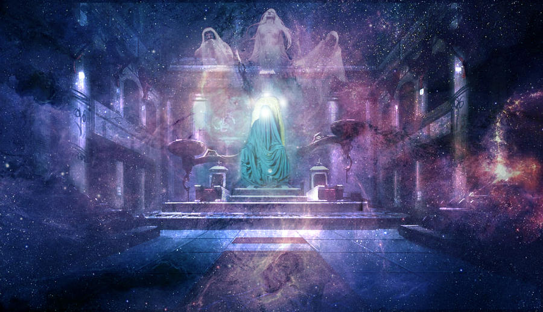
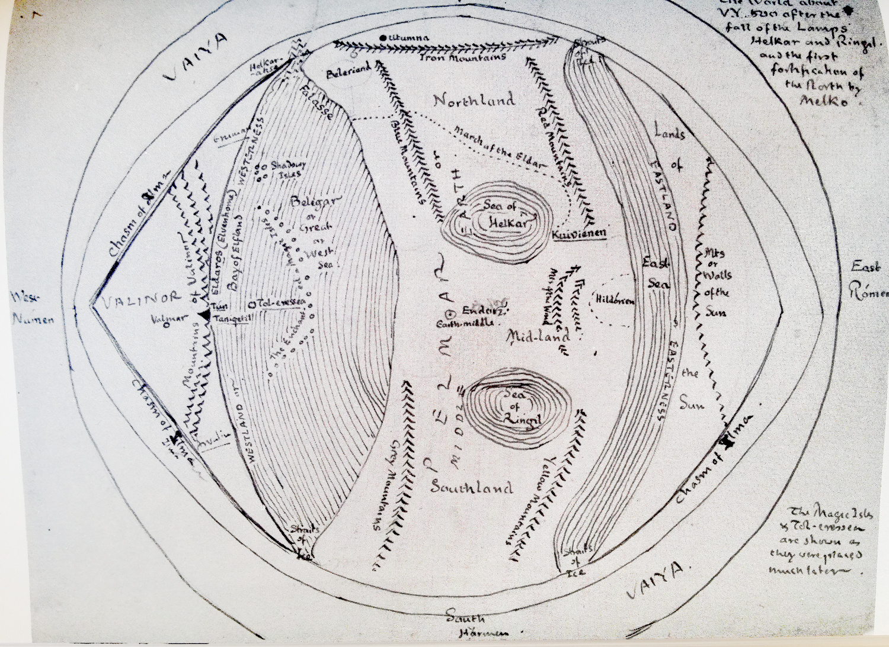

The Years of the Trees
The Dwarves and the Children of Ilúvatar
At the beginning of the Years of the Trees, Melkor rested in his fortress of Utumno, in Middle Earth, and the Valar continued building their domain of Valinor in Aman while awaiting the coming of the Firstborn of the Children of Ilúvatar: the Elves.
The Children of Ilúvatar are beings created by Ilúvatar who have their own free will and thoughts, akin to the Ainur. The Firstborn are the Quendi, also known as the Elves. They do not age after they reach adulthood, only dying if they are slain. The Elves are tied to the universe, reincarnating after death and staying in the world. The Secondborn are the Atani, also known as the race of Men. In contrast to the Elves, they have limited lifespans and were given a special gift: after death, they are no longer bound to the world and will leave it. Their fate is unknown to all but Ilúvatar himself.
While waiting for the coming of the Elves, Aulë, the smith Valar, was impatient and decided to make his own beings. And so, he created the race of the Dwarves. However, he was unable to give the dwarves free will. Ilúvatar then confronted him, scolding him for his impatience. However, when Aulë went to destroy his creations, Ilúvatar sympathized with him and forgave him. To reward him for his humility, Ilúvatar gave the dwarves free will but said that they would not awake until after the coming of the Children of Ilúvatar.
The Journey of the Elves
After many millennia, the first 144 elves finally awoke in Middle Earth. These elves were discovered by the Valar, but also Melkor. Melkor kidnapped many elves in secret, and in envy and mockery, he corrupted them until they became the hideous race of the Orcs. When the Valar found out about what was happening, they attacked Melkor, defeating him and casting him into prison.
The Valar then invited the elves to come to Valinor. Most of the elves agreed, but some elves refused the summons, staying in Middle Earth and becoming known as the Avari. The other elves who decided to come became known as the Eldar and were split into three groups: the Vanya, the Noldor, and the Teleri. The Vanya and the Noldor went eagerly to the land of Aman, but the Teleri did not all wish to go. Some of the Teleri stayed in Middle Earth and became the Sindar.
The Silmarils and Melkor’s Revenge
After reaching Valinor, the Valar taught the Eldar many things. The Noldorin Elves took a special liking to the blacksmithing crafts and were taught by Aulë, the smith Vala to become great smiths and craftsmen. Fëanor, the only son of the High King of the Noldor, was especially talented in smithing, and with some of the light of the Two Trees of Valinor, he created three jewels known as the Silmarils. These great jewels emitted blinding golden light, and everyone became fascinated with them. The Silmarils were hallowed so that “no mortal flesh, nor hands unclean, nor anything of evil will might touch them,” and Manwë, the King of the Valar, foretold that “the fates of Arda, earth, sea, and air, lay locked within them.”
At this time, Melkor pretended to have changed and vowed to aid the Valar in undoing his crimes if he were released. The Valar were convinced by his words and freed Melkor from his prison. However, Melkor had not actually changed at all; his hatred of the Valar had only grown. Melkor despised the Eldar above all, and so he started to spread lies among them, turning them against the Valar in hopes of causing a war.
Melkor’s lies caused conflict between the Valar and the Elves, and especially Fëanor. Melkor told Fëanor that the Silmarils, which he guarded fiercely, would not be safe within Valinor. After further poisoning the minds of the elves, Melkor fled and met Ungoliant, a primordial being who took the shape of a giant spider. Ungoliant fed on light and craved to suck up the light of the Two Trees of Valinor, and so she went with Melkor back to Valinor. There, they drained the trees of their light, and destroyed them, plunging the world into darkness once again.
Melkor then stole the Silmarils from Finwë, the father of Fëanor, killing him in the process. After stealing these great jewels, Melkor fled to Middle Earth. Fëanor, angry at Melkor for killing his father, and stealing the Silmarils, took his place as the new High King of the Noldor and commanded his people to chase after him. Fëanor then swore an oath, invoking Illúvatar’s name, saying that he and his children would pursue anyone who would keep the Silmarils away from him
The Noldor then started their pursuit of Melkor, whom they had named Morgoth, meaning “Dark Enemy”. They went to the Teleri, asking for ships. When the Teleri refused to give them their ships, the Noldor fought them and took the boats by force. Some of the Noldor, horrified by this, turned back, but the majority of the Noldor went on and sailed to Middle Earth.
-

Illustration of Eru Ilúvatar. Source (#1)
-

Depiction of the Valar. Source (#2)
-

Tolkien's drawing of Arda during the Years of the Trees. Source (#3)